00读前一分钟 · 全文脉络（做完题再看也行）
⭐⭐⭐ 这是一篇「旧看法 → 新证据」的科学报道：全文同时摆着三个看法、两种关系——五道题各问其中一格：
| 格 | 内容 | 证据强度 | 题 |
|---|---|---|---|
| 计划本意 | 扶贫：减少不平等、打破贫困循环（②❷） | —— | 26C |
| 惯常看法 | 扶贫与环保冲突：增长 ~ 环境恶化（③❷ ④❶） | 只有相关（④❷ 不证明因果） | —— |
| 旧研究（墨西哥） | 支持惯常看法：钱多了 → 开地养牛（④❸❹） | 因果（analyzing causality） | 27A |
| 新研究（印尼） | 计划是否影响砍伐（⑤❷）→ 砍伐少 30%（⑥❷）→ 机制（⑦） | 「相关」（is associated with）＋ 机制解释 | 28D |
| 研究的价值 | 即便不减贫，光环保就值回成本（⑧❹） | —— | 29D |
| 全文 | 一项计划的（环保）效果 | —— | 30B |
is associated with（相关）——他的研究用了分批推开的时间差来逼近因果，但措辞依然克制；⑦❶ 的解释也只说 That’s likely because。科学报道的情态词是分级的：may（①❷）→ likely（⑦❶）→ may transfer（⑧❷）→ is anybody’s guess（⑧❶）——29A 把 may 说成 will，就是在这把尺子上越级（老卡 R281）。▸ 2019 T1 认 → T2 分 → T3 档 → T4 谁 → 2020 T1 归 → T2 账 → T3 驳 → T4 时 → 2021 T1 让 → T2 证：T1 是评论，每题问「作者站哪」；T2 是报道，每题问「哪条证据支持哪个看法」。
▸ 一根线从头走到尾：「钱 → 树」——antipoverty program（①）→ gives money · cash transfers（②）→ got more money · cattle（④，钱 → 少树）→ using the money as makeshift insurance（⑦，钱 → 多树）→ the value … is more than the program costs（⑧，树 → 钱）。标题就是这根线：Giving Cash … May Also Save Trees。
00+读前背景 · 九个专名与事实（常识只帮读，不帮选——你知道墨西哥那项研究的结论是「砍伐增加」，27 题照样只认 ④❸ 的 supported the traditional view）
本篇是《科学新闻》2020 年 6 月 12 日的研究报道，报道的是同月发表在《科学进展》上的一篇论文。科学报道和 T1 那种评论不一样：作者自己几乎不表态，观点全挂在研究者名下（says Paul Ferraro · Ferraro says · Ferraro suggests）——所以 29 题题干写 According to Ferraro，而不是 The author believes。
| 专名 / 事实 | 是什么 | 在本文里的作用 |
|---|---|---|
| Science News（《科学新闻》） | 美国老牌科普期刊，面向大众报道新近发表的研究；本篇 2020-06-12 刊出（据黄皮书），标题 How Giving Cash to Poor Families May Also Save Trees in Indonesia | ⭐⭐⭐ 原刊标题就是 30 题答案的具体版：Giving Cash ＝ a program，May Also Save Trees ＝ effects。also 一词就是 26 与 29 的分界：本职是扶贫，「也」能救树 |
| CCT（conditional cash transfers，有条件现金转移支付） | 政府直接给贫困家庭发现金，但附条件（孩子入学、按时体检、产检等）；拉美最早大规模推行（墨西哥 1997 年起、巴西「家庭补助金」） | ②❷ 第一次出全名；⭐⭐ conditional 就是 26 题的陷阱来源：条件是领钱的门槛，不是计划的目的 |
| PKH（Program Keluarga Harapan，「希望家庭计划」） | 印尼版 CCT，2007 年起分批在各地推开（phasing in） | ②❶ ⑥❶ 的 phase-in——⭐⭐ 「分批推开」让「已推开的村」与「尚未推开的村」可以对比——这类评估研究常借这种时间差逼近因果；原文没展开，考题也不考 |
| Paul Ferraro（保罗·费拉罗） | 约翰斯·霍普金斯大学经济学家，研究环境政策评估；论文合作者是大自然保护协会（TNC）的 Rhita Simorangkir | ③❷ 起贯穿到末段——⭐⭐ 他是全文唯一的说话人：③❷ 转述惯常看法、④❹ 转述墨西哥研究、⑥–⑧ 讲自己的研究。他说的话不全是他的观点（③❷ says 引出的是别人的看法） |
| the only previous study … in Mexico | Alix-Garcia 等 2013 年研究墨西哥 Oportunidades 计划：利用按社区划资格线的「自然实验」，发现拿到钱的社区砍伐反而增加，与收入上升后对耗地产品（肉、奶）的需求有关 | ④❸❹——⭐⭐⭐ 27 题：它是因果研究（analyzing causality），结论是「增长 → 环境恶化」⟹ A 用 cause 而不是 correlate，正因为这是一项因果研究 |
| deforestation 与「连续第三年放缓」 | Global Forest Watch：印尼原始林损失 2017、2018、2019 连降三年，2019 年降至约 2003 年以来最低；GFW 主要归功于禁烧执法、油棕暂停令、泥炭地恢复署等政策 | ①❶——⭐⭐ 新研究的数据是 2008–2012 年，放缓是 2017–2019 年：两个时间窗不重合 ⟹ ①❷ 只能说「可能是原因之一」。考题不考这个，但它解释了作者为什么用 may |
| satellite data（卫星数据） | 用遥感影像逐年测算林地覆盖的变化，不依赖地方上报 | ⑥❶ 方法——30D process of a study 的原料：只占一句 |
| makeshift insurance（临时保险） | 发展经济学的常见解释：穷人没有正式保险，遇到歉收只能「变卖」自然资源（砍树、开荒）来渡过难关；现金让他们不必这么做 | ⑦❶ 机制——⭐⭐ 29C boost grain production 方向反了：有了钱，人们不再为补收成去开荒种稻 |
| avoided deforestation 与碳价值 | 论文按碳的社会成本给「少砍的林」估价；新闻稿称：若受助村在计划结束后仍保住森林，收益可达成本的十倍左右，若立刻补砍则大致持平 | ⑧❹——⭐⭐⭐ 29 题：原文只取最保守的说法「超过成本」（more than the program costs） |
▸ 该用的：知道 CCT 的 conditional 指「领钱的条件」，26 题就不会被 A、D 带走；知道墨西哥研究是因果研究、结论与印尼相反，27 题就知道它是被引来「代表旧看法」的；知道科学报道把观点挂在研究者名下，29 题的 According to Ferraro 就不会去找作者的话。
▸ 不该用的：你知道 CCT 在很多国家确实提高了入学率、改善了医疗，会觉得 26A／D 也算目的——可原文的 such as 只把它们当条件举例；你知道森林与气候变化关系密切，会觉得 28C「森林在气候变化中的作用」很像研究主题——可 ⑤❷ 明说研究的是计划与砍伐的关系；你知道 PKH 后来确实在扩大，会觉得 29A「将使其他亚洲国家受益」顺理成章——可 ⑧❶ 明说能否推广谁也说不准。
🔗 跨篇（站内已有篇目）：
▸ 2020 新题型《目光接触或合或分》（老卡 R293 研究段四件套）：同是研究报道——谁研究 · 研究谁 · 怎么研究 · 发现了什么；本篇 ⑤⑥ 两段四件齐全（费拉罗 · 印尼 7468 个林村 · 2008–2012 卫星数据 · 砍伐少 30%），28 题问的是「研究谁 × 研究什么」，30D 借的是「怎么研究」。
▸ 2021 T1《火车票价》：同一套卷子的上一篇是评论（每题问作者站哪），这一篇是报道（每题问证据支持谁）——同是 18 分钟，读法完全不同：评论盯转折，报道盯 says／suggests／supported 这些「挂名动词」。
01原文精读 · 全文八段（本机识别成文字 · 可切回原卷）
📄 原文由你的浏览器从原卷第 5 页识别成文字（每句末尾「原卷」可切回扫描图，「校对」可改错字）｜ 选中任意单词弹「查有道」（触屏长按选词；切回原卷后在扫描图上点词也能查）｜ 每句下方「↘ 跳到长难句精析」按钮跳 03 节（8 句短句不跳）｜ 虚线词 ＝ 本句重难点词，点开出卡片（正文里没认出来的才留在下面 🟡 行） ｜ 每段「意」= 该段意译（按句意转述，非逐字翻译）
① 结论先行：印尼森林砍伐连续三年放缓，原因之一可能是扶贫计划
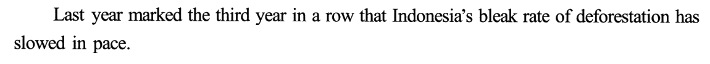
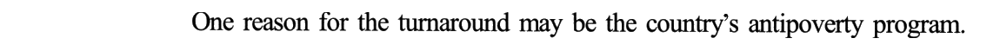
| 句 | 作用 | 信号 | 养活的选项 |
|---|---|---|---|
| ❶ | 现象 | the third year in a row · slowed in pace | 26B（把「效果」当「目的」） |
| ❷ | 可能的原因 ＝ 全文主旨 | One reason … may be | 30B ✔ 的第一块原料 |
⭐ turnaround 是个「回指词」：它不带新信息，只把上句的 slowed in pace 打包成一个名词，好让 ❷ 去解释它——读到这种「the＋概括名词」，立刻回上一句找它装的是什么（同类：④❷ those correlations 回指 ④❶ 两个 correlated）。
② 背景：这个计划是什么——有条件地给最穷的人发钱，宗旨是减少不平等、打破贫困循环；已在几十个国家使用，在印尼改善了儿童发育
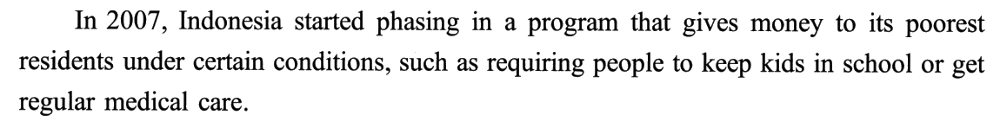
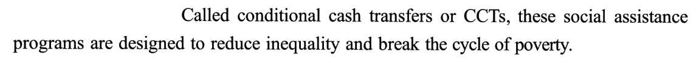
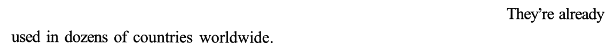
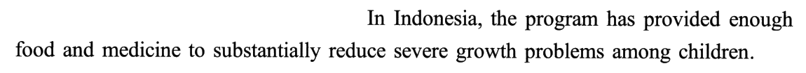
| 句 | 说明书的哪一格 | 信号 | 养活的选项 |
|---|---|---|---|
| ❶ | 内容 ＋ 条件 | gives money … under certain conditions, such as | 26A（上学 → 教育体系）· 26D（体检 → 医疗改革） |
| ❷ | 名称 ＋ 宗旨 | are designed to | 26C ✔ · 29B（inequality → 地区不平等） |
| ❸ | 普及程度 | dozens of countries | ——（为 ④ 的墨西哥铺路） |
| ❹ | 在印尼的扶贫成效 | to substantially reduce | ——（29 题被 Even if 让掉的那一项） |
⚠️ such as 后面的东西只是举例：「比如要孩子上学、要定期体检」——命题人把这两个例子各拔高一层，造出「改进地方教育系统」「推动医疗改革」；原文的条件是对家庭的要求，选项写成了对制度的改革，范围整整大了一级（老卡 R94：问一类事物的特征只取定义句，for example／such as 之后只提供干扰）。
▸ conditional 一词本身就是提示：conditional cash transfers ＝「附条件的现金转移」，名字里就写着「条件」——条件是这类计划的形式，不是它的目的。
③ 惯常看法：CCT 一般不考虑环境；扶贫与环保常被看作相互冲突的目标
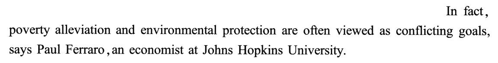
| 句 | 作用 | 信号 | 养活的选项 |
|---|---|---|---|
| ❶ | 计划的盲区：不看环境 | But … don’t generally consider | 26B 的反证（环境不在宗旨里） |
| ❷ | 惯常看法：扶贫 vs 环保 | In fact · are often viewed as · says | 27A ✔ 的回指对象 · 30A debates 的原料 |
though。⚠️ says Paul Ferraro 不等于「费拉罗认为」：他是在介绍学界的惯常看法，他自己的研究恰恰要推翻它——挂名动词 says 只说明话从谁嘴里出来，不说明谁同意。29 题题干 According to Ferraro 问的是他对自己研究的评价，在 ⑧❹，不在这里。
▸ 30A The debates over a program 就是从这句造的：「冲突的目标」听起来像一场争论——可原文没有两方在辩，只有一个惯常看法和一项推翻它的研究（黄皮书：文中并非并列陈述两种观点，而是先以惯常看法作铺垫，然后引出挑战惯常看法的新发现）。
④ 惯常看法的依据 → 相关不等于因果 → 此前唯一的因果研究（墨西哥）支持了传统看法：钱多了，有人就开地养牛
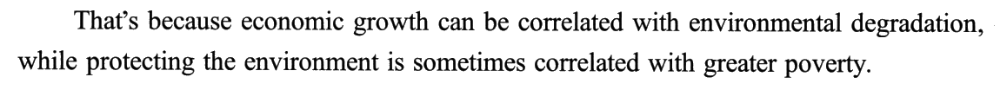
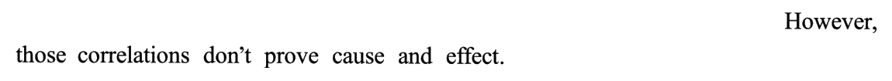
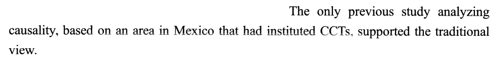
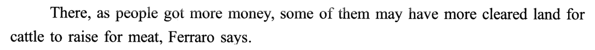
| 句 | 作用 | 信号 | 养活的选项 |
|---|---|---|---|
| ❶ | 惯常看法的依据（相关） | That’s because · correlated with ×2 | 27A ✔ 的内容 |
| ❷ | 降级：相关 ≠ 因果 | However · don’t prove cause and effect | —— |
| ❸ | 旧因果研究：支持惯常看法 | analyzing causality · supported the traditional view | 27A ✔（cause ↔ causality）· 27C（traditional 词面） |
| ❹ | 旧研究的机制：钱 → 开地养牛 | some of them may · cattle to raise for meat | 27B（拔高成主要生计）· 27D（编出「农民参与」） |
⚠️ 别被「作者不同意」带偏：墨西哥研究支持的是作者要推翻的旧看法——但题目问的是「它被引来说明什么」，不是「作者同不同意它」。引用一项与自己结论相反的研究，目的就是说明「旧看法有证据」，这样新研究的反转才有分量。
▸ 27C 的 traditional 是词面诱饵：traditional view（传统看法）→ traditional lifestyles（传统生活方式），一个词没换、意思全换（黄皮书：选项杂糅第四段③④句碎片信息）（老卡 R39）。
⑤ 转折：这类计划不一定伤害环境；费拉罗想弄清印尼的扶贫计划是否在影响砍伐；印尼热带林面积世界第三、砍伐率最高之列
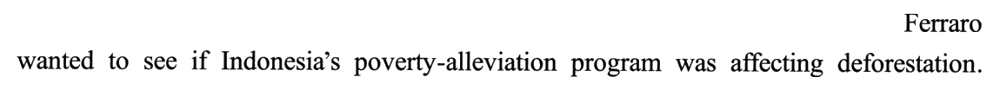
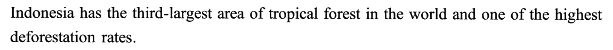
| 句 | 作用 | 信号 | 养活的选项 |
|---|---|---|---|
| ❶ | 反转惯常看法（弱否定） | do not have to · though | —— |
| ❷ | 研究问题 | wanted to see if | 28D ✔ |
| ❸ | 选点理由 | third-largest · highest deforestation rates | 28C（forests → climate change） |
⚠️ do not have to 的强度：它不是说「CCT 对环境有益」，只是说「不一定有害」——研究结论要等第六段才给。考场上读到 do not have to／need not，脑子里要标「只否定必然」，别提前把答案读成「有益」。
⑥ 方法与发现：2008–2012 年卫星数据、15 省 7468 个林村；计划与砍伐减少 30% 相关
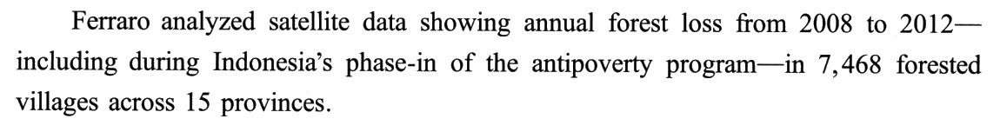
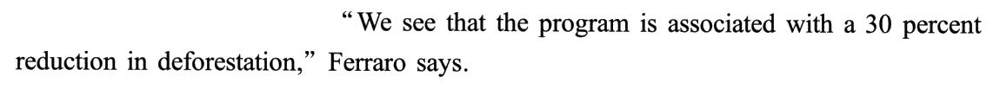
| 句 | 作用 | 信号 | 养活的选项 |
|---|---|---|---|
| ❶ | 方法：数据、时段、样本 | analyzed satellite data · 破折号插入 | 30D process of a study（局部）· 28B annual 的原料 |
| ❷ | 发现：砍伐少 30% | is associated with a 30 percent reduction | 28D ✔ 的佐证 · 30B ✔ 的核心 |
⚠️ 28B its annual rate of poverty alleviation 是三个词拼的：annual 来自 ❶ 的 annual forest loss，rate 来自 ①❶ 的 rate of deforestation，poverty alleviation 来自 ③❷——每个词都在原文，组合在原文里不存在（黄皮书：概念杂糅、偷换为年度减贫率）（老卡 R39 原词拼接）。
▸ is associated with 呼应 ④❷：前文刚说「相关不证明因果」，这里研究者报告自己的发现也只说「相关」——科学家说话留余地，命题人就不会出「CCT 导致砍伐减少」这种说死的正确项：30B 用的是中性的 effects，29D 用的是 can protect（can，不是 will）。
⑦ 机制：穷人把钱当作应对坏天气的临时保险——往常雨季推迟就毁林种稻补收成，有了 CCT 就改用钱来补
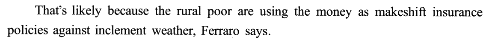
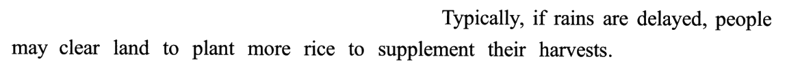
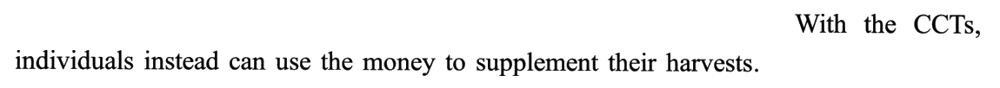
| 情形 | 手段 | 目的 | 对森林 |
|---|---|---|---|
| ❷ 没有 CCT（Typically） | clear land to plant more rice | to supplement their harvests | 砍 |
| ❸ 有了 CCT（instead） | use the money | to supplement their harvests | 不砍 |
⭐⭐ 墨西哥 vs 印尼：钱流向哪儿，森林就往哪边走——④❹ 墨西哥：钱多了 → 买更多肉 → 开地养牛 → 砍；⑦ 印尼：钱成了保险 → 不必开地种稻 → 不砍。同样是给穷人发钱，结局相反，差在钱替代了什么（这正是 ⑧❶ 说「能否推广谁也说不准」的原因）。
▸ insurance 是个比喻：policy 在这里是「保单」不是「政策」——makeshift insurance policies ＝ 权宜的保单；against inclement weather ＝ 保的险种是「坏天气」。
⑧ 外推与价值：能否推广难说，费拉罗认为可能适用于亚洲其他地区；不管能否推广，研究表明利人者也可能利环境；即便不减贫，光避免砍伐少排的二氧化碳就值回成本
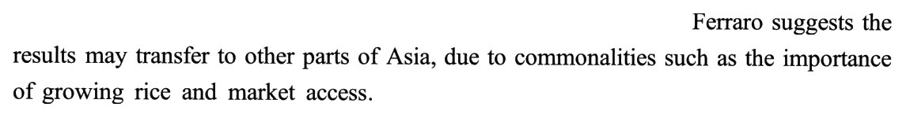
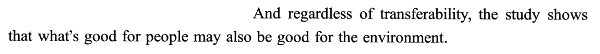
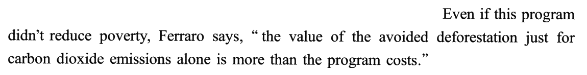
| 句 | 作用 | 信号 | 养活的选项 |
|---|---|---|---|
| ❶ | 外推：不知道 | is anybody’s guess | 29A（不知道 → 会） |
| ❷ | 外推：也许可以 | suggests … may transfer | 29A（may → will）· 30C（局部当全文） |
| ❸ | 主旨收口：利人也利环境 | regardless of · may also be good for | 30B ✔ |
| ❹ | 价值：不算扶贫也值 | Even if … didn’t · just for … alone | 29D ✔ · 29B（扶贫一侧被让掉） |
⚠️ 26 与 29 正解互换：26 问计划的目的（aim）——答案是扶贫（C），「降低砍伐」是错项（B）；29 问计划最有价值处——答案是环保（D），「减少不平等」是错项（B）。同一对概念，两题正误互换：本意是扶贫，价值在环保——标题那个 also 就是分界线。
▸ 29A 错两层：① 语气——❶ 说不知道、❷ 说 may，A 说 will（老卡 R281 推测链对推测词）；② 主语——原文是「研究结果可能适用」，A 是「计划将使别的国家受益」：适用的是结论，受益的是国家，说的不是一回事（黄皮书：选项曲解末段②句信息，且把原文的委婉语气 may 偷换为肯定语气 will）。
02题目与解析（点选项即判 · 再看解析）
十五个干扰项分十族：条件当宗旨 2（26A 上学 → 教育体系 · 26D 体检 → 医疗改革）· 无中生有 2（27D 农民参与 · 28A 接受程度）· 概念杂糅 2（28B 年度减贫率 · 28C 森林 ＋ 气候）· 局部当全文 2（30C 可推广性 · 30D 研究过程）· 效果当本意 1（26B 降低砍伐）· 本意当价值 1（29B 减少不平等，还偷换成「地区」）· 细节拔高 1（27B 养牛 → 主要生计）· 词面联想 1（27C traditional view → traditional lifestyles）· 语气偷换 1（29A may → will）· 方向反 1（29C 不必开荒种稻 → 粮食增产）· 结构误读 1（30A 一个旧看法 ＋ 一项新研究 → 争论）。没有哪一族独大——这是科学报道的标准分布：选项几乎都从原文取了词，错在把词挪到了不该在的那一格（条件格、本意格、价值格、旧研究格、新研究格）。
⭐ 本篇最该练的是「证」：每道题都在问「哪条证据支持哪个看法」——26 计划的本意（designed to，不是 conditions）· 27 旧研究支持谁（supported the traditional view ⟹ 回指 ③④）· 28 新研究问什么（wanted to see if，两头都要装下）· 29 新研究的价值在哪（Even if 让掉扶贫，剩下环保）· 30 全文证明了什么（一项计划的效果）。2021 T1 是五个「让」，T2 是五个「证」。
事实细节（计划的目的）26. According to the first two paragraphs, CCT programs aim to
正源：②❷ are designed to reduce inequality and break the cycle of poverty
▸ 第一步：题干问 aim to——问「目的」，先在前两段搜目的表达：to／in order to／be designed to／aim at／for the purpose of……②❷ 的 are designed to 一眼可见；
▸ 第二步：分清「条件」与「目的」——②❶ 的 under certain conditions, such as … 是领钱的条件，②❷ 的 designed to 才是计划的宗旨；
▸ 第三步：对词——reduce inequality ＋ break the cycle of poverty（减少不平等、打破贫困循环）↔ help poor families get better off（帮贫困家庭过上更好的日子）⟹ C（新卡 R298，老卡 R94 定义句 vs 举例）。
黄皮书技巧栏（要点转述）：本题就 CCT 计划的创立目的设题，题干与选项的辨识度都高；可先用题干中辨识度高的词汇定位，再搜定位处与「目的」相关的表达（to、in order to、be designed to、aim to/for、be aimed at、for/with the purpose of、so that 等）快速锁定答案——由 are designed to 及其后的并列动词结构 reduce inequality and break the cycle of poverty 锁定 C。
requiring people to keep kids in school——「要求孩子继续上学」是领钱的条件，A 把它变成了计划的宗旨，还从「家庭让孩子上学」拔高到「改进地方教育系统」（黄皮书：原文提及教育信息是为了举例说明 CCT 计划为贫困群体提供资金是有前提条件的，选项将前提条件曲解为计划的宗旨）。[B] lower deforestation rates ⚠️ 效果当本意：← ①❶
rate of deforestation has slowed——砍伐放缓确实与计划有关，但 ③❶ 明说这类计划一般不考虑环境；它是附带效果，不是设计目的（黄皮书：森林砍伐速度降低是印尼 CCT 计划产生的意料之外的附带效果，而非计划的初衷）。⭐ 记住这个选项——它在 29 题换个说法（protect the environment）就成了正解。[C] help poor families get better off ✔ ②❷ reduce inequality and break the cycle of poverty 的同义改写。
[D] facilitate health care reform ⚠️ 条件当宗旨 ＋ 拔高：← ②❶
get regular medical care——与 A 同一种造法：「定期体检」是条件，D 拔成了「推动医疗改革」（黄皮书：本项错误原因与 A 项相同）。
写作目的（引用研究）27. The study based on an area in Mexico is cited to show that
正源：④❸ supported the traditional view ＋ 回指 ③❷ often viewed as conflicting goals ＋ ④❶ economic growth can be correlated with environmental degradation
▸ 第一步：题干问 is cited to show——写作目的题，答案是研究服务的那个看法，不是研究的细节（墨西哥、养牛）；
▸ 第二步：看研究在句中的谓语——④❸ 只给了一个动作：
supported the traditional view；▸ 第三步：回指 traditional view——它本身没内容，回上文取：③❷ 扶贫与环保常被看作冲突 ← ④❶ That’s because 经济增长可能伴随环境恶化 ⟹ A；A 用 cause 而不用 correlated，正因为这是一项「分析因果」的研究（新卡 R299，老卡 R41 例子服务的论点、R16 往外扩一层）。
黄皮书技巧栏（要点转述）：本题就引用研究事例的目的设题。论据（研究事例）本身的细节往往并非作者关注的焦点，它常用作正例或反例来说明超出其本身的论点；答题关键是借助逻辑衔接手段、语义指代关联、上下文语义关联提炼语义重心——先由 supported the traditional view 知「研究证实了传统看法」，再据 That’s because、However 体现的段际句际逻辑以及 often viewed 与 the traditional view 的近义复现，推出传统观点的具体内容为「扶贫与环保相矛盾、经济增长与环境恶化相关」，锁定 A。
[B] cattle rearing has been a major means of livelihood for the poor ⚠️ 细节拔高：← ④❹
cattle to raise for meat——原文只说「有些人钱多了可能开地养牛」，是拿到钱之后的一种做法；B 说成「养牛一直是穷人的主要生计」，时间、范围、程度全变了（黄皮书：文中仅指出养牛是人们拿到钱之后的可能做法，并未介绍其主要生计来源）。[C] CCT programs have helped preserve traditional lifestyles ⚠️ 词面联想：← ④❸
the traditional view——traditional 一词没换，「看法」换成了「生活方式」；原文压根没谈 CCT 与生活方式的关系（黄皮书：选项杂糅第四段③④句碎片信息）（老卡 R39）。[D] antipoverty efforts require the participation of local farmers ⚠️ 无中生有：← ④❹
people … cleared land … cattle——由「当地人领钱后养牛」捏出「扶贫需要当地农民参与」，原文没有这种必要条件关系（黄皮书：上下文中并未提及这一绝对化的条件性关联，答非所问）。
事实细节（研究目的）28. In his study about Indonesia, Ferraro intends to find out
正源：⑤❷ wanted to see if Indonesia’s poverty-alleviation program was affecting deforestation
▸ 第一步：题干问 intends to find out——研究目的，找「想弄清」的那一句：⑤❷ wanted to see if；
▸ 第二步：拆宾语从句的两头——program（扶贫计划 ＝ 上文的 CCT）× deforestation（森林砍伐 ＝ forest loss）；if … was affecting 就是「两者有没有关系」；
▸ 第三步：查选项装没装下两头——A 只有 CCTs、B 只有扶贫、C 只有森林，只有 D 两头都在；⑥❷ 的发现（计划与砍伐少 30% 相关）再一次确认（老卡 R293 研究段四件套、R21 主体校验）。
黄皮书技巧栏（要点转述）：本题考查对文中信息的整合归纳。由题干 Ferraro intends to find out 定位至第五段②句，可确定 if Indonesia’s poverty-alleviation program was affecting deforestation 为正确项来源；结合上文可知该扶贫计划即 CCT 计划，结合下文研究方法与发现可知 deforestation 近义对应 forest loss；只有 D 涵盖了扶贫和森林这两个关键点。
[B] its annual rate of poverty alleviation ⚠️ 概念杂糅：← ①❶
rate（of deforestation）＋ ③❷ poverty alleviation ＋ ⑥❶ annual（forest loss）——三个词三个出处，拼成「年度减贫率」；研究看的是砍伐，不是减贫速度（黄皮书：选项将「（年度）森林砍伐速度」「扶贫」「年度森林减少量」等概念杂糅、偷换为「年度减贫率」）（老卡 R39）。[C] the role of its forests in climate change ⚠️ 概念杂糅：← ⑤❸
tropical forest ＋ ⑦ inclement weather／if rains are delayed ＋ ⑧❹ carbon dioxide emissions——把「森林资源丰富」「坏天气」「二氧化碳」强行串成「森林在气候变化中的作用」；研究关心的是计划与砍伐（黄皮书：偏离了费拉罗实际关注的「CCT 扶贫计划和森林砍伐之间的关联」）。[D] the relation of CCTs to its forest loss ✔ ⑤❷ 的两头 ＋ ⑥❷ 的发现。
人物观点（最有价值处）29. According to Ferraro, the CCT program in Indonesia is most valuable in that
正源：⑧❹ Even if this program didn’t reduce poverty ＋ just for carbon dioxide emissions alone is more than the program costs
▸ 第一步：题干 According to Ferraro ＋ most valuable——人物观点题，找费拉罗对计划价值的评价：⑧❹ 的 the value of …；
▸ 第二步：Even if 剥离——让步从句把计划的本职「减贫」拿掉：就算它没减贫，主句仍成立——仅避免砍伐少排的二氧化碳就超过成本；剥掉本职之后还撑得起成本的那一项，就是最有价值的那一项；
▸ 第三步：上位概括——avoided deforestation ＋ carbon dioxide emissions ⟹ 保护环境 ⟹ D；再用主旨验算：⑧❸ what’s good for people may also be good for the environment 与 D 同向（新卡 R300）。
黄皮书技巧栏（要点转述）：本题既考人物看法，也考全文主旨，有两种解题思路——一是直接从引述费拉罗看法的末句长难句入手，由 the value … just for carbon dioxide emissions alone is more than the program costs 锁定 D；二是从主旨入手：费拉罗从第三段一直贯穿到末段，表明文章在开篇点明主旨后主要借他的研究与言论展开，故他的核心观点应与全文主旨（印尼的扶贫计划有助于减少森林砍伐）一致，只有 D 体现了 CCT 计划通过减少砍伐起到的环保作用。
the results may transfer to other parts of Asia——原文 may（也许），A 是 will（将会）；原文是「研究结果可能适用」，A 是「计划将使别国受益」；何况 ⑧❶ 先说了「能否推广谁也说不准」（黄皮书：选项曲解末段②句信息，且把原文的委婉语气 may 偷换为肯定语气 will）（老卡 R281）。[B] it will reduce regional inequality ⚠️ 本意当价值 ＋ 概念偷换：← ②❷
reduce inequality——减少不平等是计划的本意，恰恰是 ⑧❹ 用 Even if 让掉的那一侧；而且原文的 inequality 指贫富差距，B 加了 regional，变成「地区之间的不平等」（黄皮书：文中 inequality 泛指社会阶层间的不平等，并未论及不同地区间的经济差距）。⭐ 它就是 26 题的正解换了个壳。[C] it can boost grain production ⚠️ 方向反：← ⑦❷
clear land to plant more rice——多种水稻是没有 CCT 时的做法；有了 CCT，人们 instead 用钱补收成、不再开荒种稻——计划若说对粮食有什么影响，也是「少开地」而不是「增产」（黄皮书：CCT 计划实际上不利于粮食生产——减少毁林开地不利于扩大水稻种植）。[D] it can protect the environment ✔ ⑧❹ avoided deforestation ＋ carbon dioxide 的上位概括；can 与原文 may 同强度。
全文主旨30. What is the text centered on?
正源：①❷ One reason … may be the country’s antipoverty program ＋ ⑥❷ is associated with a 30 percent reduction ＋ ⑧❸ may also be good for the environment
▸ 第一步：看选项结构——四项是 2×2：「debates／effects of a program」与「transferability／process of a study」；
▸ 第二步：先切主语——全文的对象是计划（首段 antipoverty program、标题 Giving Cash），研究只是证明它的证据 ⟹ 先划掉 C、D；
▸ 第三步：再切谓语——文章讲的是计划带来了什么（砍伐少 30%、利人也利环境），不是两方在争什么 ⟹ effects ⟹ B（新卡 R301，老卡 R125 拆开 X of Y、R40 覆盖度）。
黄皮书技巧栏（要点转述）：本题考查对全文主旨的进一步提炼。先根据首段初步把握主旨，再快速梳理全文内容，最后把主旨中的具体概念抽象化——本文主旨为「印尼的一项扶贫计划有助于减缓森林砍伐速度」，其中「印尼的一项扶贫计划」属于「计划／政策」范畴，「有助于减缓森林砍伐速度」可抽象为「（计划／政策产生的）效果」，故 B 正确。
often viewed as conflicting goals ＋ ④❸ the traditional view——文中有一个惯常看法、一项旧研究、一项新研究，但没有两方在辩论；惯常看法只是铺垫，新发现才是重点（黄皮书：文中并非并列陈述两种观点，而是先以惯常看法作铺垫，然后引出挑战惯常看法的新发现，选项偏离文章焦点）。[B] The effects of a program ✔ 首段点题 → 新研究的发现 → 末段收口，全程都是「计划的效果」。
[C] The transferability of a study ⚠️ 局部当全文：← ⑧❶❷
translates elsewhere／may transfer ＋ ⑧❸ transferability——只在末段前两句，而且 ⑧❸ 用 regardless of transferability 主动把这个话题甩开了（黄皮书：末段只是全文核心内容的延伸，并非中心话题）。[D] The process of a study ⚠️ 局部当全文：← ⑥❶
analyzed satellite data——研究过程只占一句（黄皮书：文章仅在第六段简要介绍了研究的数据来源及具体信息，选项无力涵盖全篇）。
02+专栏 · 条件 ≠ 宗旨：26 题——②❶ 说「在一定条件下给最穷的人发钱，比如要孩子上学、要定期体检」，②❷ 说「这类计划旨在减少不平等、打破贫困循环」。条件是领钱的门槛，宗旨是发钱想达到的事；题干 aim to 只对得上 designed to。A、D 把 such as 后面的两个条件各拔高一级（家庭的义务 → 制度的改革），B 把一个事后才发现的效果当成了设计时的目的
| 格 | 原文 | 信号 | 26 题 |
|---|---|---|---|
| 内容 | gives money to its poorest residents | 定语从句 | —— |
| 条件（门槛） | keep kids in school · regular medical care | under certain conditions, such as | A 教育体系 ✗ · D 医疗改革 ✗ |
| 宗旨（目的） | reduce inequality · break the cycle of poverty | are designed to | C get better off ✔ |
| 成效（本职） | reduce severe growth problems among children | has provided … to | —— |
| 附带效果 | deforestation has slowed | ①❶；③❶ 明说不考虑环境 | B 降低砍伐 ✗ |
▸ 怎么用在考场上：读到
under … conditions／on condition that／as long as／such as requiring，在卷边标「门槛」；读到 be designed to／aim to／in order to／so as to，标「目的」。题干问 aim／purpose／intend，只去「目的」格取。▸ 拔高是条件格干扰项的固定做法：原文的条件是对家庭的要求（让孩子上学、去体检），选项写成对制度的改造（改进教育系统、推动医疗改革）——范围一大，就不再是原文的意思（老卡 R94：such as／for example 之后只提供干扰；老卡 R116：As a condition of X, A agreed to Y——条件是「给的」，目的是「要的」）。
▸ 附带效果为什么不是目的：③❶
don’t generally consider effects on the environment——设计时根本没考虑，事后才发现有好处。本意看设计时说了什么，不看事后发生了什么。📌 题干限定 the first two paragraphs：B 的原料在第一段、A／D 的原料在第二段，四个选项都在范围里——限定段落只帮你定位，不帮你排除——对照老卡 R7（段落外的「对信息」也是错项）：本题四项都在段内，这把刀用不上，只能靠分格。
02++专栏 · 被引研究按「它支持谁」回指：27 题「The study based on an area in Mexico is cited to show that ___」——④❸ 只给了这项研究一个动作 supported the traditional view，而 traditional view 本身没有内容，要回 ③❷ often viewed as conflicting goals 和 ④❶ That’s because 取。它支持的恰是作者要推翻的旧看法——引用它不是因为作者同意，而是为了说明「旧看法也有因果证据」，这样第五段的 though 才有分量。A 用 cause 不用 correlated，正因为它是全文唯一一项「分析因果」的旧研究
| 证据 | 说了什么 | 证据级别 | 支持谁 |
|---|---|---|---|
| ④❶ 两个 correlated | 增长 ~ 环境恶化；保护环境 ~ 更穷 | 相关（can be · sometimes） | 惯常看法 |
| ④❷ However | 相关不证明因果 | ——（给 ❶ 降级） | —— |
| ④❸ 墨西哥研究 | 钱多了 → 开地养牛（④❹） | 因果（analyzing causality） | 惯常看法 ⟹ 27A |
| ⑥❷ 印尼研究 | 计划 ~ 砍伐少 30% | 相关措辞（is associated with）＋ 机制（⑦） | 新看法（⑤❶ do not have to） |
▸ 回指三步：① 找研究在句中的谓语（supported）；② 取它的宾语（the traditional view）；③ 宾语若是 the＋概括名词（view／idea／belief／assumption），回上文找它第一次出现的地方（③❷ often viewed as）和它的依据（④❶ That’s because）——答案就是依据那一句的上位说法（老卡 R41 例子服务的论点、R16 往外扩一层）。
▸ 为什么是 cause 不是 correlated：A 写「经济增长往往导致环境恶化」——④❶ 只说相关，但支持它的墨西哥研究是
analyzing causality 的；A 说的正是「这项因果研究所支持的那个看法」。「相关」④❶ 自己就说了，用不着再引一项研究；引这项研究，正是为了把相关补成因果。⚠️ B、C、D 三个干扰项全取自 ④❹ 的细节（养牛、traditional、people／land）——研究的机制细节是它的「怎么做到的」，不是它的「被引来干什么」（黄皮书：论据本身的细节往往并非作者意在关注的焦点）。
02+++专栏 · 本意 vs 价值：26 题问计划的目的（aim），29 题问它最有价值之处（most valuable）。同一对概念在两题里正误互换：26 的正解是扶贫（C），「降低砍伐」是错项（B）；29 的正解是环保（D），「减少不平等」是错项（B）。分界线就是 ⑧❹ 的 Even if this program didn’t reduce poverty——把本职让掉之后，仅环保一项就超过成本，所以最有价值的是环保。标题里那个 also 说的也是同一件事
| 概念 | 26 题（aim） | 29 题（most valuable） | 原文 |
|---|---|---|---|
| 扶贫／减少不平等 | C ✔ | B ✗（还加了 regional） | ②❷ designed to · ⑧❹ Even if … didn’t reduce poverty（被让掉） |
| 减少砍伐／保护环境 | B ✗ | D ✔ | ③❶ 不考虑环境（不是本意）· ⑧❹ alone is more than the program costs（价值） |
Even if X didn’t do A, B alone is worth the cost——让步从句拿掉的 A 是本职，主句里那个 alone 的 B 是价值。问「最有价值／最重要／主要好处」时，答案取 alone 那一项，被 Even if 让掉的那一项反而是干扰项（新卡 R300）。▸ just for … alone 是双重限定：「仅仅就二氧化碳排放这一项」——连森林的其他好处（生物多样性、水土）都没算，只算一项就已经值回成本，这是费拉罗在用最保守的口径说话。背景：新闻稿给出的估计更大（若森林在计划结束后仍保住，收益可达成本十倍左右），原文只取了「超过成本」这个最稳的说法。
▸ 标题里的 also：How Giving Cash to Poor Families May Also Save Trees——also 前是本职（给穷人发钱 ＝ 扶贫），also 后是附带的价值（救树）。26 问 also 之前，29 问 also 之后。
⚠️ 两题挨得不远，做 29 时最容易被 26 带跑：刚在 26 题里确认了「宗旨是扶贫」，到 29 看见 B reduce inequality 会觉得眼熟——眼熟正是因为它是 26 的答案。题干换了问法（aim → most valuable），答案就要跟着换格。
02++++专栏 · 主旨题 2×2 选项先切主语：30 题四个选项是「debates／effects of a program」与「transferability／process of a study」——先切主语：全文的对象是计划，研究只是证据（首段 antipoverty program、标题 Giving Cash），C、D 出局；再切谓语：文章讲计划带来了什么（砍伐少 30%、利人也利环境），没有两方在辩，A 出局。顺带画一张情态尺：科学报道里的 may、likely、anybody’s guess 各有强度，29A 的 will 越了级
| of a program（对象） | of a study（证据） | |
|---|---|---|
| 主线 | B effects ✔（①❷ ⑥❷ ⑧❸ 贯穿） | D process（只有 ⑥❶ 一句） |
| 支线 | A debates（③④ 只是铺垫，且无两方） | C transferability（⑧❶❷，且被 ⑧❸ regardless of 甩开） |
▸ 覆盖度验算：effects 覆盖 ①（砍伐放缓）、⑥（少 30%）、⑦（为什么少）、⑧（值不值）；debates 只罩 ③④；transferability 只罩 ⑧❶❷；process 只罩 ⑥❶（老卡 R40）。
▸ 情态尺（本篇）：
| 强度 | 原文 | 说的是 |
|---|---|---|
| 不知道 | ⑧❶ is anybody’s guess | 能否推广 |
| 也许 | ①❷ may be · ⑧❷ may transfer · ⑧❸ may also be good | 原因之一 · 推广 · 主旨 |
| 很可能 | ⑦❶ That’s likely because | 机制 |
| 相关（不说因果） | ⑥❷ is associated with | 发现 |
| 判断 | ⑧❹ is more than the program costs | 价值 |
can protect 对 ⑧❸ 的 may／⑧❹ 的判断——同级；29A will benefit 对 ⑧❶❷ 的「不知道／也许」——越了两级（老卡 R281）。02+++++专栏 · 十五个干扰项的产地总账 ＋ 同序检查
| 族 | 数 | 选项 | 产地 |
|---|---|---|---|
| 条件当宗旨 | 2 | 26A · 26D | ②❶ such as 后的两个条件，各拔高一级 |
| 无中生有 | 2 | 27D · 28A | 农民参与 · 接受程度——原文都没有这个话题 |
| 概念杂糅 | 2 | 28B · 28C | rate＋poverty alleviation＋annual · forest＋weather＋CO₂ |
| 局部当全文 | 2 | 30C · 30D | ⑧❶❷ 可推广性 · ⑥❶ 研究方法 |
| 效果当本意 | 1 | 26B | ①❶ 砍伐放缓（③❶ 明说不考虑环境） |
| 本意当价值 | 1 | 29B | ②❷ reduce inequality（⑧❹ 被 Even if 让掉） |
| 细节拔高 | 1 | 27B | ④❹ 有些人可能养牛 → 主要生计 |
| 词面联想 | 1 | 27C | traditional view → traditional lifestyles |
| 语气偷换 | 1 | 29A | ⑧❷ may transfer → will benefit |
| 方向反 | 1 | 29C | ⑦ 不必开荒种稻 → 粮食增产 |
| 结构误读 | 1 | 30A | 一个旧看法 ＋ 一项新研究 → 争论 |
▸ 同序检查：完美同序——26 ①② · 27 ③④ · 28 ⑤⑥ · 29 ⑧ · 30 全文。⑦ 机制段没有题，但它养活了 29C；两段一题，与 T1 的「一段一题」一样规整。
▸ 五题对应证据链的五个环：本意（26）→ 旧证据（27）→ 新问题（28）→ 新价值（29）→ 总结论（30）。读一遍全文就是把这五个环串起来。
▸ 2019 T1 认 → T2 分 → T3 档 → T4 谁 → 2020 T1 归 → T2 账 → T3 驳 → T4 时 → 2021 T1 让 → T2 证。
03长难句精析 · 16 句（全文 24 句，跳过 8 句 13 词以内的短句）
本篇 24 句 421 词，平均 17.5 词一句（2021 T1 是 27.7）；超过 25 词的只有 3 句（②❶ 32 · ⑥❶ 27 · ⑧❹ 27）。句条是原卷扫描，分析里只引短语。这篇的句子不难在长，难在「挂名」和「降级」：① 挂名——观点挂在谁名下（says Paul Ferraro 倒装 · Ferraro says 句末 · Ferraro suggests · 直接引语）；② 降级——情态一层层往下压（can be · sometimes · may · do not have to · likely · is associated with · anybody’s guess）；③ 名词化——一个动作压成名词（the turnaround · phase-in · reduction · transferability · the avoided deforestation）；④ 分词作定语（analyzing causality · showing annual forest loss · Called …）。读法：先找主干，再问两件事——这话是谁说的、说得有多满。
- 主干：
Last year marked the third year——时间作主语，mark「标志着、是」：「去年是……的第三年」，不是「去年标记了」。 - in a row：「连续」，修饰 the third year。
- that 从句：
that … has slowed in pace——说明「第三年」是什么的第三年；that 相当于 in which／when（关系副词用法），year 不在从句里作主语或宾语——同类结构the first／second／third time (that) …。 - bleak rate of deforestation：bleak「惨淡的、令人沮丧的」修饰 rate——砍伐率本身很糟，所以「放缓」才是好消息。
This year marks the 50th anniversary of …「今年是……五十周年」——时间名词作主语 ＋ mark ＋ 序数词（老卡 R258：周年引子是时间钩）。⭐ slowed in pace 是「速度放慢」，不是「步子变小」。- 主干：
Indonesia started phasing in a program——phase in「分阶段引入、逐步推行」，phasing in 作 started 的宾语。 - 定语从句：
that gives money to its poorest residents——修饰 program，its 指 Indonesia。 - 状语：
under certain conditions——修饰 gives money：不是无条件地给。 - 举例：
such as requiring people to …——such as 后接动名词短语，给 conditions 举例；require sb to do「要求某人做」，两个并列的 to do：keep kids in school ／ get regular medical care。
- 过去分词状语：
Called conditional cash transfers or CCTs——逻辑主语是后面的 programs（「被称为……的」），给计划起名。 - 主干：
these … programs are designed to reduce … and break …——be designed to do「旨在、设计用来」，后接两个并列不定式（第二个省略 to）。 - the cycle of poverty：「贫困的循环」——穷 → 孩子缺教育、缺营养 → 下一代还穷；break the cycle「打破循环」。
Called X, these Y … ＝「这类 Y 被称为 X」。- 主干：
the program has provided enough food and medicine——现在完成时：到现在为止的成绩。 - 不定式：
to substantially reduce severe growth problems——修饰 enough（enough … to do「足以做」），副词 substantially 插在 to 与动词之间（分裂不定式）。 - among children：限定范围。
- 递进：
In fact——不是「其实（相反）」，是「事实上（更进一步）」：不仅不考虑环境，还被看作冲突。 - 主干：
poverty alleviation and environmental protection are often viewed as conflicting goals——view A as B「把 A 看作 B」的被动；两个主语都是「名词＋名词」。 - 倒装挂名：
says Paul Ferraro——引述动词放在主语前，新闻体常见；后接同位语an economist at …。
- 主干：
That’s because …——That 回指 ③❷ 的整个看法，because 引出表语从句：「这是因为……」。 - 从句一：
economic growth can be correlated with environmental degradation——be correlated with「与……相关」，can 表可能。 - 从句二：
while protecting the environment is sometimes correlated with greater poverty——while 表对照「而」；动名词短语 protecting the environment 作主语；sometimes 再降一级。
- 主干：
The only previous study … supported the traditional view——主语被两个修饰成分撑开，谓语在句末才出现。 - 分词定语：
analyzing causality——修饰 study：「分析因果关系的」研究；causality「因果关系」。 - 过去分词短语（插入）：
based on an area in Mexico——研究「以……为基础」；后接定语从句that had instituted CCTs，过去完成时：研究之前那里就已推行 CCT。
- 地点副词：
There——指墨西哥那个地区，不是 there be 句型。 - 状语从句：
as people got more money——as「随着」。 - 主干：
some of them may have more cleared land——some of them「其中一些人」＋ may：两重限定；cleared land「开垦出来的地」，cleared 作定语。 - 目的：
for cattle to raise for meat——for＋名词＋不定式，「好用来养牛（以产肉）」；第二个 for meat 表目的。 - 句末挂名：
Ferraro says。
- 主干：
Indonesia has A and B——两个并列宾语。 - 宾语一：
the third-largest area of tropical forest in the world——序数词＋最高级 ＝「第三大」。 - 宾语二：
one of the highest deforestation rates——one of the＋最高级＋复数。
- 主干：
Ferraro analyzed satellite data。 - 分词定语：
showing annual forest loss from 2008 to 2012——修饰 data：数据「显示」的是什么。 - 破折号插入：
including during Indonesia’s phase-in of the antipoverty program——补充说明时段里包括了计划分批推开的时期；including 后接介词短语 during …（少见但合法）。 - 地点：
in 7,468 forested villages across 15 provinces——修饰 forest loss（在哪里的森林损失），被破折号隔开。
- 直接引语：
We see that …——研究者亲口报告发现；We 指费拉罗的研究团队。 - 宾语从句：
the program is associated with a 30 percent reduction in deforestation——be associated with「与……有关联」；a 30 percent reduction「减少 30%」（数词＋percent 作前置定语）。 - 句末挂名：
Ferraro says。
- 主干：
That’s likely because …——That 回指 ⑥❷ 的发现；likely 是副词「很可能」，插在 is 与 because 之间。 - 从句：
the rural poor are using the money as …——the＋形容词表一类人（the rural poor ＝ 农村穷人）；use A as B「把 A 当作 B」。 - B 的内容：
makeshift insurance policies against inclement weather——makeshift「临时凑合的」；insurance policy「保单」；against「防范」；inclement「（天气）恶劣的」。
- 句首副词：
Typically——「通常（在没有 CCT 的情况下）」：描述的是旧做法。 - 条件：
if rains are delayed——雨季推迟（水稻种植靠雨）。 - 主干：
people may clear land to plant more rice——clear land「开垦土地（砍掉林木）」，不定式表目的。 - 第二个目的：
to supplement their harvests——supplement「补充」：种更多稻是为了补上歉收。
- 主干：
Ferraro suggests (that) the results may transfer to …——suggest 后接陈述句表「认为、暗示」（不是「建议」，所以不用虚拟）；transfer to「转用到、适用于」。 - 原因：
due to commonalities such as …——due to「由于」；commonalities「共同点」。 - 举例：
the importance of growing rice and market access——共同点的两个例子：种稻（的重要性）与市场准入——and 连接的是 growing rice 与 market access 还是两个并列的共同点，两种读法意思相同，不影响题。
suggest that sb (should) do（建议，虚拟）vs suggest that sth may／is（认为、表明，陈述）——这里是 may transfer，属后者。⚠️ 29A 的偷换：may transfer（结果也许适用）→ will benefit（计划将使别国受益）——情态升了、主语也换了（老卡 R281）。- 让步状语：
regardless of transferability——「不论能否推广」：把 ❶❷ 的话题收起来。 - 主干：
the study shows that …。 - 宾语从句：
what’s good for people may also be good for the environment——what 引导的主语从句作宾语从句的主语；also 是关键：在「对人好」之外，「也」对环境好。
- 让步从句：
Even if this program didn’t reduce poverty——even if「即使」，过去时表与事实相反的假设（实际上 ②❹ 说它减了）。 - 插入挂名：
Ferraro says——夹在让步从句与引语之间。 - 引语主干：
the value … is more than the program costs——主语被 of 短语与 just for … alone 撑开，谓语 is more than；the program costs是省略了 what 的从句（＝ what the program costs），costs 是动词。 - 主语的修饰：
of the avoided deforestation（avoided 作定语：「被避免了的」砍伐）＋just for carbon dioxide emissions alone（just … alone 双重限定：「仅就二氧化碳排放一项」）。
more than the program costs ＝ 比「这个计划所花费的」更多；写作文可直接搬这个结构（worth more than it costs）；② avoided deforestation——「避免了的砍伐」＝ 少砍的那部分森林，名词化把一个反事实压成了一个名词短语。⭐⭐⭐ Even if 剥离法：让掉的是本职（减贫），alone 留下的是价值（环保）⟹ D（新卡 R300）。03+熟词僻义清算表 · 41 处
生词不多（deforestation、alleviation、causality、degradation、inclement、makeshift、commonalities），真正会让你读错的是熟词进了「发展经济学 ＋ 林业 ＋ 科学报道」这个场子换了义项，分三族：① 政策术语（transfer 是「转移支付」不是「转学」、program 是「计划、项目」不是「节目」、conditional 是「附条件的」、phase in 是「分批推行」、assistance 是「援助」）· ② 林业与农业（clear 是「开垦、砍光」不是「清楚」、raise 是「饲养」、harvest 是「收成」、area 是「面积」）· ③ 研究报道腔（mark 是「是……的一年」、associated 是「相关」、translate 是「（在别处）同样成立」、guess 是「说不准」、policy 是「保单」、suggest 是「认为」）。
| 词 / 短语 | 你以为 | 本篇的意思 | 出处与作用 |
|---|---|---|---|
mark | 标记、分数 | 是……（的一年／周年）、标志着 | ①❶ Last year marked the third year ⭐⭐ |
bleak | 荒凉的 | （数字、前景）惨淡的、令人沮丧的 | ①❶ bleak rate ⭐⭐ |
pace | 步子 | 速度（slow in pace 放慢） | ①❶ ⭐ |
turnaround | 转身 | （由坏转好的）好转、扭转 | ①❷ 回指「放缓」⭐⭐ |
program | 节目、程序 | （政府）计划、项目 | ①❷ antipoverty program ⭐⭐⭐——30 题 a program |
phase in | 阶段 | 分阶段推行、逐步引入（名词 phase-in） | ②❶ ⑥❶ ⭐⭐⭐ |
conditions | 状况、环境 | 条件、前提（under certain conditions） | ②❶ ⭐⭐⭐——26 题的陷阱来源 |
conditional | 条件句的（语法） | 附带条件的 | ②❷ conditional cash transfers ⭐⭐⭐ |
transfer | 转学、换乘 | （政府对个人的）转移支付（n.）；适用于、转用到（v.，⑧❷） | ②❷ cash transfers · ⑧❷ may transfer to ⭐⭐⭐——一词两义（老卡 R209） |
assistance | 帮助（口语） | （社会）援助、救济 | ②❷ social assistance programs ⭐ |
cycle | 自行车；周期 | 恶性循环（the cycle of poverty） | ②❷ ⭐⭐ |
growth | （经济）增长 | （儿童）生长发育（②❹）——④❶ economic growth 才是经济增长 | ②❹ growth problems · ④❶ ⭐⭐⭐——同篇两义 |
consider | 认为 | 考虑到、顾及 | ③❶ don’t generally consider effects ⭐⭐ |
In fact | 其实（转折） | 事实上（递进） | ③❷ ⭐⭐ |
alleviation | —— | 减轻、缓解（poverty alleviation 扶贫） | ③❷ ⑤❷ ⭐⭐⭐——28B 的原料 |
goals | 进球 | 目标 | ③❷ conflicting goals ⭐ |
correlated | —— | 相关的（不一定是因果） | ④❶ ⭐⭐⭐——④❷ 立刻说它不证明因果 |
degradation | 降级、降解 | （环境）恶化、退化 | ④❶ environmental degradation ⭐⭐——27A 原词 |
while | 当……时 | 而（对照） | ④❶ ⭐⭐ |
prove | 证明（一般） | 证实（因果关系）——don’t prove cause and effect | ④❷ ⭐⭐ |
institute | 研究所（n.） | （v.）设立、实行（had instituted CCTs） | ④❸ ⭐⭐⭐ |
view | 风景、视野 | 看法、观点（the traditional view） | ④❸ ⭐⭐⭐——27C 把它换成 lifestyles |
clear | 清楚的；清理 | （v.）开垦（把林木砍光）；cleared land 开垦出的地 | ④❹ ⑦❷ ⭐⭐⭐——林业语境里 ≈ deforest |
raise | 举起；提高 | 饲养（牲畜） | ④❹ cattle to raise for meat ⭐⭐ |
though | 虽然（连词，句首） | （副词，句末）不过、可是 | ⑤❶ ⭐⭐⭐——全文转折点 |
do not have to | 不必（无须） | 不一定（不必然） | ⑤❶ ⭐⭐——只否定必然，不等于「有益」 |
area | 地区 | 面积（the third-largest area of tropical forest） | ⑤❸ ⭐⭐——④❸ an area in Mexico 才是「地区」：同篇两义 |
associated | 联合的 | （统计上）相关的（is associated with） | ⑥❷ ⭐⭐⭐ |
policy | 政策 | 保险单（insurance policies） | ⑦❶ ⭐⭐⭐ |
makeshift | —— | 临时凑合的、权宜的 | ⑦❶ ⭐⭐ |
inclement | （clement 仁慈的）不仁慈的 | （天气）恶劣的——几乎只与 weather 搭配 | ⑦❶ ⭐⭐ |
supplement | 补品（n.） | （v.）补充、弥补 | ⑦❷❸ supplement their harvests ⭐⭐ |
harvest | 收获（动作） | 收成、收获量（复数 harvests） | ⑦❷❸ ⭐ |
translate | 翻译 | （结论、做法）在别处同样成立、转化为 | ⑧❶ translates elsewhere ⭐⭐⭐ |
guess | 猜 | anybody’s guess：谁也说不准 | ⑧❶ ⭐⭐⭐——29A will 的反证 |
suggest | 建议 | 认为、暗示（后接陈述语气 may transfer） | ⑧❷ ⭐⭐⭐ |
access | 进入；访问（网络） | （市场）准入、可达（market access） | ⑧❷ ⭐⭐ |
avoided | 避开的 | （被）避免了的：avoided deforestation ＝ 少砍了的那部分林 | ⑧❹ ⭐⭐⭐ |
costs | 成本（n. 复数） | （v.）花费：more than the program costs | ⑧❹ ⭐⭐ |
better off | 更好地离开 | （经济上）更宽裕的（get better off） | 26C ⭐⭐⭐ |
centered on | 以……为中心（位置） | 以……为主题 | 30 题干 ⭐ |
04词汇复盘（点卡片看详情）· 107 张
05可搬进作文的素材 · 8 组
本篇话题——扶贫、环保、政策的意外效果、用证据推翻成见——正对英语一大作文里「发展与环保」「政策评价」「科技／研究的价值」「一举两得」一类题目（乡村振兴、垃圾分类、共享单车、生态补偿、碳中和都能用）。只搬句式骨架，不搬原文：下面每组的英文是按原文句式自拟的例句。
⟹ 开篇摆一个趋势（借 ①❶）：比 In recent years 具体得多。
可套：
Last year marked the fifth year in a row that the number of rural students entering university has risen.⟹ 介绍一项政策的目的（借 ②❷）：be designed to 比 aim to 更像说明文。
可套：
The new subsidy is designed to ease the burden on young families and encourage them to have children.⟹ 立一个要推翻的成见（借 ③❷）：议论文第二段的标准开头。
可套：
In many fast-growing cities, jobs and clean air are often viewed as conflicting goals.⟹ 驳一个看似有数据支撑的说法（借 ④❷）：一句话就显得有分析力。
可套：
Students who use phones more may score lower, but such a correlation does not prove cause and effect.⟹ 反转段的首句（借 ⑤❶）：语气克制，比 X is good for Y 稳。
可套：
Tourism does not have to damage local culture, though; it can also help preserve it.⟹ 解释一个现象的机制（借 ⑦❶）：比 The reason is that 更有画面感。
可套：
That’s likely because young people are using short videos as a makeshift escape from stress.⟹ 结尾升华「一举两得」（借 ⑧❸）：大作文最后一段直接可用。
可套：
Regardless of its cost, the bike-sharing scheme shows that what is good for commuters may also be good for the city.⟹ 为一项举措算账、下结论（借 ⑧❹）：先让掉本职，再说附带价值都够了——论证力极强。
可套：
Even if the reading program didn’t raise test scores, the value of the habit it builds alone would be more than it costs.⭐ 这个模板的好处是「证据感」：每一步都有一个科学报道式的克制措辞（may · likely · does not have to · regardless of），不喊口号，结论反而更可信。
⚠️ Indonesia、CCT、Ferraro、satellite data、30 percent 这些专名和数字别照搬；要搬的是「often viewed as conflicting goals」「don’t prove cause and effect」「does not have to … though」「what’s good for A may also be good for B」「Even if … alone」五样骨架。